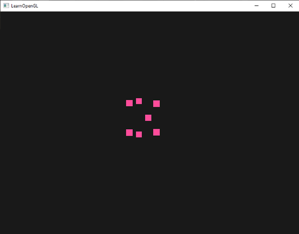
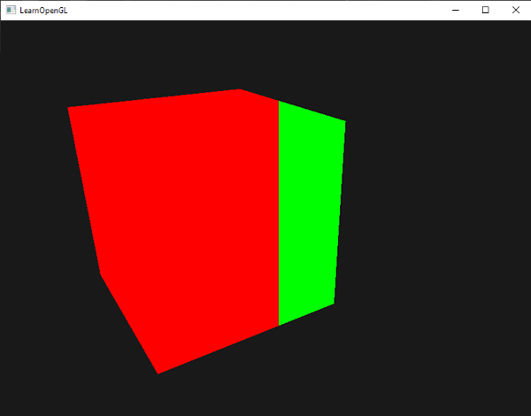
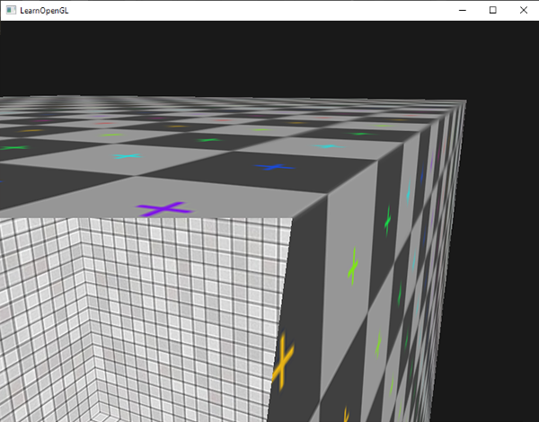
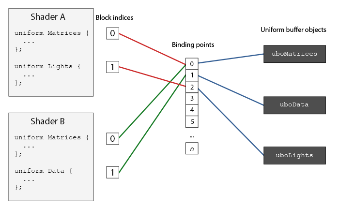
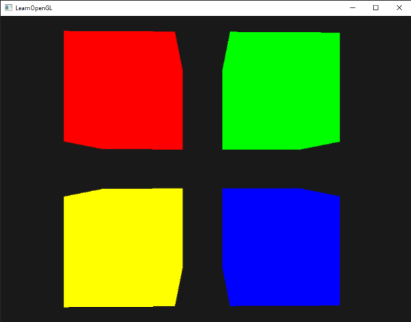

고급 GLSL
이 장에서는 장면의 시각적 품질을 획기적으로 향상시키는 초고급의 멋진 새 기능들을 다루지는 않습니다. 대신 GLSL의 흥미로운 측면들과 앞으로의 작업에 도움이 될 만한 유용한 팁들을 소개합니다. 기본적으로 GLSL을 사용하여 OpenGL 애플리케이션을 개발할 때 알아두면 좋은 기능들을 알려드리는 것입니다.
이번 시간에는 흥미로운 내장 변수 몇 가지와 셰이더 입력 및 출력을 구성하는 새로운 방법, 그리고 유니폼 버퍼 객체라는 매우 유용한 도구에 대해 논의하겠습니다.
GLSL의 내장 변수
셰이더는 파이프라인 방식으로 작동하기 때문에 현재 셰이더 외부의 다른 소스에서 데이터를 얻으려면 데이터를 전달해야 합니다. 우리는 정점 속성, 유니폼, 샘플러를 통해 이를 수행하는 방법을 배웠습니다. 하지만 GLSL에는 gl_ 접두사가 붙은 몇 가지 추가 변수가 있는데, 이를 통해 데이터를 수집하거나 쓰는 추가적인 방법을 사용할 수 있습니다. 지금까지 살펴본 챕터에서 이미 두 가지 변수를 살펴보았습니다. 바로 정점 셰이더의 출력 벡터인 gl_Position과 프래그먼트 셰이더의 gl_FragCoord입니다.
이번 글에서는 GLSL에 내장된 몇 가지 흥미로운 입력 및 출력 변수를 살펴보고, 이러한 변수들이 어떻게 유용하게 사용될 수 있는지 설명하겠습니다. 모든 내장 변수를 다루지는 않으므로, 모든 내장 변수를 확인하고 싶다면 OpenGL 위키를 참조하세요.
정점 셰이더 변수
우리는 이미 정점 셰이더의 클립 공간 출력 위치 벡터인 gl_Position을 살펴보았습니다. 정점 셰이더에서 gl_Position을 설정하는 것은 화면에 무언가를 렌더링하려면 반드시 필요한 조건입니다. 이전에 이미 살펴본 내용과 크게 다르지 않습니다.
gl_PointSize
우리가 선택할 수 있는 렌더링 기본 요소 중 하나는 GL_POINTS입니다. 이 경우 각 정점은 기본 요소이며 점으로 렌더링됩니다. OpenGL의 glPointSize 함수를 통해 렌더링되는 점의 크기를 설정할 수 있지만, 정점 셰이더에서도 이 값을 조절할 수 있습니다.
GLSL에서 정의된 출력 변수 중 하나인 gl_PointSize는 픽셀 단위로 점의 너비와 높이를 설정할 수 있는 부동 소수점 변수입니다. 정점 셰이더에서 점의 크기를 설정함으로써 각 정점별로 점의 크기를 세밀하게 제어할 수 있습니다.
정점 셰이더에서 점 크기에 영향을 주는 기능은 기본적으로 비활성화되어 있지만, 이 기능을 활성화하려면 OpenGL의 GL_PROGRAM_POINT_SIZE를 활성화해야 합니다.
glEnable(GL_PROGRAM_POINT_SIZE);
점 크기에 영향을 미치는 간단한 예는 점 크기를 클립 공간 위치의 z 값(즉, 뷰어에서 정점까지의 거리)과 같게 설정하는 것입니다. 이렇게 하면 뷰어가 정점에서 멀어질수록 점 크기가 커집니다.
void main()
{
gl_Position = projection * view * model * vec4(aPos, 1.0);
gl_PointSize = gl_Position.z;
}
그 결과, 우리가 그린 점들은 그 점에서 멀어질수록 더 크게 나타납니다.

정점별 점 크기를 다양하게 하는 것이 파티클 생성과 같은 기술에 흥미로운 요소라는 것을 쉽게 짐작할 수 있습니다.
gl_VertexID
gl_Position과 gl_PointSize는 정점 셰이더에서 출력되는 값으로 읽어들이는 변수이므로, 이 변수들에 값을 써넣어 결과에 영향을 줄 수 있습니다. 또한 정점 셰이더는 gl_VertexID라는 흥미로운 입력 변수를 제공하는데, 이 변수는 읽기 전용입니다.
정수 변수 gl_VertexID는 현재 렌더링 중인 정점의 ID를 저장합니다. 인덱스 기반 렌더링(glDrawElements 사용) 시에는 현재 렌더링 중인 정점의 인덱스를 저장하고, 인덱스 없이 렌더링(glDrawArrays 사용) 시에는 렌더링 호출 시작 이후 현재 처리 중인 정점의 번호를 저장합니다.
프래그먼트 셰이더 변수
프래그먼트 셰이더 내부에서는 몇 가지 흥미로운 변수에 접근할 수 있습니다. GLSL은 gl_FragCoord와 gl_FrontFacing이라는 두 가지 유용한 입력 변수를 제공합니다.
gl_FragCoord
깊이 테스트에 대한 논의 과정에서 gl_FragCoord를 몇 번 본 적이 있는데, gl_FragCoord 벡터의 z 성분이 해당 프래그먼트의 깊이 값과 같기 때문입니다. 하지만 이 벡터의 x 및 y 성분을 활용하면 더욱 흥미로운 효과를 낼 수 있습니다.
gl_FragCoord의 x 및 y 구성 요소는 창의 왼쪽 하단을 기준으로 하는 프래그먼트의 창 또는 화면 공간 좌표입니다. glViewport를 사용하여 800x600의 렌더링 창을 지정했으므로 프래그먼트의 화면 공간 좌표는 x 값이 0에서 800 사이, y 값이 0에서 600 사이가 됩니다.
프래그먼트 셰이더를 사용하면 프래그먼트의 화면 좌표에 따라 다른 색상 값을 계산할 수 있습니다. gl_FragCoord 변수는 기술 데모에서 흔히 볼 수 있듯이, 서로 다른 프래그먼트 계산의 시각적 출력을 비교하는 데 사용됩니다. 예를 들어, 화면을 두 부분으로 나누어 창의 왼쪽과 오른쪽에 각각 다른 출력을 렌더링할 수 있습니다. 프래그먼트의 화면 좌표에 따라 다른 색상을 출력하는 프래그먼트 셰이더의 예는 다음과 같습니다.
void main()
{
if(gl_FragCoord.x < 400)
FragColor = vec4(1.0, 0.0, 0.0, 1.0);
else
FragColor = vec4(0.0, 1.0, 0.0, 1.0);
}
창의 너비가 800이므로, 픽셀의 x 좌표가 400보다 작으면 해당 픽셀은 창의 왼쪽 끝에 위치하게 되며, 이 부분에 다른 색상을 지정해야 합니다.

이제 완전히 다른 두 개의 프래그먼트 셰이더 결과를 계산하고 각각을 창의 다른 쪽에 표시할 수 있습니다. 이는 예를 들어 다양한 조명 기법을 테스트하는 데 매우 유용합니다.
gl_FrontFacing
프래그먼트 셰이더에서 또 다른 흥미로운 입력 변수는 gl_FrontFacing 변수입니다. 페이스 컬링 챕터에서 언급했듯이 OpenGL은 정점의 감기 순서를 통해 면이 앞면인지 뒷면인지 판단할 수 있습니다. gl_FrontFacing 변수는 현재 프래그먼트가 앞면 또는 뒷면 중 어느 쪽에 속하는지를 알려줍니다. 예를 들어, 모든 뒷면에 서로 다른 색상을 출력하도록 설정할 수 있습니다.
gl_FrontFacing 변수는 프래그먼트가 앞면의 일부이면 true이고 그렇지 않으면 false인 부울 값입니다. 이 변수를 이용하면 안쪽과 바깥쪽에 서로 다른 텍스처를 적용한 큐브를 만들 수 있습니다.
#version 330 core
out vec4 FragColor;
in vec2 TexCoords;
uniform sampler2D frontTexture;
uniform sampler2D backTexture;
void main()
{
if(gl_FrontFacing)
FragColor = texture(frontTexture, TexCoords);
else
FragColor = texture(backTexture, TexCoords);
}
컨테이너 안을 들여다보면 이제 다른 머티리얼이 사용된 것을 볼 수 있습니다.

gl_FragDepth
입력 변수 gl_FragCoord는 화면 공간 좌표를 읽고 현재 프래그먼트의 깊이 값을 얻을 수 있는 변수이지만, 읽기 전용 변수입니다. 프래그먼트의 화면 공간 좌표는 변경할 수 없지만, 깊이 값은 설정할 수 있습니다. GLSL은 셰이더 내에서 프래그먼트의 깊이 값을 수동으로 설정할 수 있도록 gl_FragDepth라는 출력 변수를 제공합니다.
셰이더에서 깊이 값을 설정하려면 출력 변수에 0.0에서 1.0 사이의 값을 씁니다.
gl_FragDepth = 0.0; // 이 프래그먼트의 깊이 값은 이제 0.0입니다.
셰이더가 gl_FragDepth에 아무것도 쓰지 않으면 해당 변수는 자동으로 gl_FragCoord.z에서 값을 가져옵니다.
하지만 깊이 값을 수동으로 설정하는 데에는 중대한 단점이 있습니다. 그 이유는 프래그먼트 셰이더에서 gl_FragDepth에 값을 쓰는 순간 OpenGL이 조기 깊이 테스트(깊이 테스트 장에서 설명)를 비활성화하기 때문입니다. 프래그먼트 셰이더가 실행되기 전에 프래그먼트의 깊이 값을 알 수 없기 때문에 조기 깊이 테스트가 비활성화되는 것입니다. 프래그먼트 셰이더는 실제로 이 값을 변경할 수 있기 때문입니다.
gl_FragDepth에 값을 쓸 때는 이러한 성능 저하를 고려해야 합니다. 하지만 OpenGL 4.2부터는 프래그먼트 셰이더 상단에서 깊이 조건을 사용하여 gl_FragDepth 변수를 다시 선언함으로써 양쪽의 단점을 어느 정도 보완할 수 있습니다.
layout (depth_<condition>) out float gl_FragDepth;
여기서 condition은 다음과 같은 값을 가질 수 있습니다.
| condition | 설명 |
|---|---|
any |
기본값입니다. 조기 깊이 테스트가 비활성화됩니다. |
greater |
깊이 값은 gl_FragCoord.z 값보다 크게만 설정할 수 있습니다. |
less |
깊이 값은 gl_FragCoord.z 값보다 작게만 설정할 수 있습니다. |
unchanged |
gl_FragDepth에 쓰면 정확히 gl_FragCoord.z에 쓰이게 됩니다. |
깊이 조건을 greater 또는 less로 지정하면 OpenGL은 프래그먼트의 깊이 값보다 크거나 작은 깊이 값만 기록할 것이라고 가정할 수 있습니다. 이렇게 하면 깊이 버퍼 값이 gl_FragCoord.z의 다른 방향에 포함될 때에도 OpenGL은 초기 깊이 테스트를 수행할 수 있습니다.
프래그먼트 셰이더에서 깊이 값을 높이면서도 초기 깊이 테스트를 일부 유지하려는 예시는 아래 프래그먼트 셰이더에 나와 있습니다.
#version 420 core // GLSL 버전을 참고하세요!
out vec4 FragColor;
layout (depth_greater) out float gl_FragDepth;
void main()
{
FragColor = vec4(1.0);
gl_FragDepth = gl_FragCoord.z + 0.1;
}
이 기능은 OpenGL 버전 4.2 이상에서만 사용할 수 있다는 점에 유의하세요.
인터페이스 블록
지금까지는 정점에서 프래그먼트 셰이더로 데이터를 보낼 때마다 여러 개의 입력/출력 변수를 선언했습니다. 이렇게 하나씩 선언하는 것이 한 셰이더에서 다른 셰이더로 데이터를 보내는 가장 쉬운 방법이지만, 애플리케이션 규모가 커질수록 여러 변수를 함께 보내야 할 가능성이 높아집니다.
GLSL은 이러한 변수들을 체계적으로 관리할 수 있도록 인터페이스 블록이라는 기능을 제공합니다. 인터페이스 블록의 선언은 구조체 선언과 매우 유사하지만, 입력 블록인지 출력 블록인지에 따라 in 또는 out 키워드를 사용한다는 점이 다릅니다.
#version 330 core
layout (location = 0) in vec3 aPos;
layout (location = 1) in vec2 aTexCoords;
uniform mat4 model;
uniform mat4 view;
uniform mat4 projection;
out VS_OUT
{
vec2 TexCoords;
} vs_out;
void main()
{
gl_Position = projection * view * model * vec4(aPos, 1.0);
vs_out.TexCoords = aTexCoords;
}
이번에는 다음 셰이더로 보낼 모든 출력 변수를 한데 모으는 vs_out이라는 인터페이스 블록을 선언했습니다. 이는 다소 간단한 예이지만, 셰이더의 입력/출력을 체계적으로 정리하는 데 도움이 된다는 것을 쉽게 짐작할 수 있습니다. 또한 다음 장인 지오메트리 셰이더에서 살펴보겠지만, 셰이더의 입력/출력을 배열로 그룹화할 때도 유용합니다.
다음으로 프래그먼트 셰이더에서 입력 인터페이스 블록을 선언해야 합니다. 블록 이름(VS_OUT)은 프래그먼트 셰이더에서도 정점 셰이더에서 사용한 것과 동일해야 하지만, 인스턴스 이름(vs_out)은 원하는 대로 지정할 수 있습니다. 단, 입력 값을 포함하는 프래그먼트 구조체에 vs_out와 같은 혼동을 일으킬 수 있는 이름은 피해야 합니다.
#version 330 core
out vec4 FragColor;
in VS_OUT
{
vec2 TexCoords;
} fs_in;
uniform sampler2D texture;
void main()
{
FragColor = texture(texture, fs_in.TexCoords);
}
인터페이스 블록 이름이 같으면 해당 입력과 출력이 서로 연결됩니다. 이는 코드를 체계적으로 정리하는 데 도움이 되는 유용한 기능이며, 기하 셰이더와 같은 특정 셰이더 단계 간을 넘나들 때 특히 유용합니다.
유니폼 버퍼 객체
저희는 꽤 오랫동안 OpenGL을 사용해 오면서 유용한 기능들을 많이 익혔지만, 몇 가지 불편한 점도 발견했습니다. 예를 들어, 여러 셰이더를 사용할 때 대부분의 셰이더에서 동일한 유니폼 변수를 계속해서 설정해야 하는 문제가 있습니다.
OpenGL은 유니폼 버퍼 객체라는 도구를 제공하여 여러 셰이더 프로그램에서 동일하게 유지되는 전역 유니폼 변수 집합을 선언할 수 있도록 합니다. 유니폼 버퍼 객체를 사용하면 관련 유니폼 변수들을 고정된 GPU 메모리에 한 번만 설정하면 됩니다. 하지만 셰이더별로 고유한 유니폼 변수들은 여전히 수동으로 설정해야 합니다. 유니폼 버퍼 객체를 생성하고 구성하는 데에는 약간의 작업이 필요합니다.
유니폼 버퍼 객체는 다른 버퍼와 마찬가지로 glGenBuffers 함수를 사용하여 생성하고, GL_UNIFORM_BUFFER 버퍼 타겟에 바인딩한 후, 관련 유니폼 데이터를 버퍼에 저장할 수 있습니다. 유니폼 버퍼 객체의 데이터 저장 방식에는 몇 가지 규칙이 있으며, 이는 나중에 자세히 살펴보겠습니다. 먼저 간단한 정점 셰이더를 예로 들어 투영 행렬과 뷰 행렬을 소위 유니폼 블록에 저장해 보겠습니다.
#version 330 core
layout (location = 0) in vec3 aPos;
layout (std140) uniform Matrices
{
mat4 projection;
mat4 view;
};
uniform mat4 model;
void main()
{
gl_Position = projection * view * model * vec4(aPos, 1.0);
}
대부분의 예제에서는 사용하는 각 셰이더에 대해 매 프레임마다 투영 및 뷰 유니폼 행렬을 설정합니다. 이는 유니폼 버퍼 객체가 유용하게 사용되는 완벽한 예입니다. 이제 이러한 행렬을 한 번만 저장하면 되기 때문입니다.
여기서는 4x4 행렬 두 개를 저장하는 Matrices라는 유니폼 블록을 선언했습니다. 유니폼 블록 내의 변수는 블록 이름을 접두사로 붙이지 않고 직접 접근할 수 있습니다. 그런 다음 이러한 행렬 값을 OpenGL 코드 내의 버퍼에 저장하고, 이 유니폼 블록을 선언한 각 셰이더는 해당 행렬에 접근할 수 있습니다.
아마 지금쯤 layout(std140) 문이 무엇을 의미하는지 궁금하실 겁니다. 이 문은 현재 정의된 유니폼 블록이 내용에 대해 특정 메모리 레이아웃을 사용한다는 것을 나타냅니다. 즉, 이 구문은 유니폼 블록의 레이아웃(uniform block layout)을 설정합니다.
유니폼 블록 레이아웃
유니폼 블록의 내용은 버퍼 객체에 저장되는데, 이는 사실상 GPU 전역 메모리의 예약된 영역에 불과합니다. 이 메모리 영역에는 어떤 종류의 데이터가 저장되는지에 대한 정보가 없으므로, OpenGL에 메모리의 어느 부분이 셰이더의 어떤 유니폼 변수에 해당하는지 알려줘야 합니다.
셰이더에서 다음과 같은 유니폼 블록을 상상해 보세요.
layout (std140) uniform ExampleBlock
{
float value;
vec3 vector;
mat4 matrix;
float values[3];
bool boolean;
int integer;
};
우리가 알고 싶은 것은 각 변수의 크기(바이트)와 오프셋(블록 시작 위치에서부터)입니다. 그래야 해당 순서대로 버퍼에 변수를 배치할 수 있기 때문입니다. OpenGL에서는 각 요소의 크기가 명확하게 명시되어 있으며, C++ 데이터 유형과 직접적으로 대응합니다. 벡터와 행렬은 (대규모) 부동 소수점 배열입니다. 하지만 OpenGL에서 명확하게 명시되지 않은 것은 변수 사이의 간격(spacing)입니다. 이 때문에 하드웨어는 변수를 원하는 위치에 배치하거나 패딩할 수 있습니다. 예를 들어, 하드웨어는 vec3을 float 옆에 배치할 수 있습니다. 하지만 모든 하드웨어가 이를 처리할 수 있는 것은 아니며, 일부 하드웨어는 float을 추가하기 전에 vec3을 4개의 float 배열로 패딩합니다. 이는 유용한 기능이지만, 우리에게는 불편할 수 있습니다.
기본적으로 GLSL은 공유 레이아웃이라는 유니폼 메모리 레이아웃을 사용합니다. '공유'라는 이름은 하드웨어에서 오프셋이 한 번 정의되면 여러 프로그램에서 일관되게 공유되기 때문입니다. 공유 레이아웃을 사용하면 GLSL은 변수의 순서가 유지되는 한 최적화를 위해 유니폼 변수의 위치를 변경할 수 있습니다. 각 유니폼 변수가 어떤 오프셋에 위치할지 알 수 없기 때문에 유니폼 버퍼를 정확하게 채우는 방법을 알 수 없습니다. glGetUniformIndices와 같은 함수를 사용하여 이 정보를 조회할 수 있지만, 이 장에서는 그 방법을 사용하지 않을 것입니다.
공유 레이아웃은 공간 절약 최적화라는 이점을 제공하지만, 각 유니폼 변수에 대한 오프셋을 일일이 조회해야 하므로 상당한 작업량이 발생합니다. 따라서 일반적으로는 공유 레이아웃 대신 std140 레이아웃을 사용하는 것이 좋습니다. std140 레이아웃은 일련의 규칙에 따라 각 변수 유형의 오프셋을 표준화하여 메모리 레이아웃을 명확하게 지정합니다. 이렇게 표준화되어 있기 때문에 각 변수의 오프셋을 수동으로 쉽게 파악할 수 있습니다.
각 변수는 std140 레이아웃 규칙을 사용하여 유니폼 블록 내에서 변수가 차지하는 공간(패딩 포함)과 동일한 기본 정렬(base alignment)을 갖습니다. 각 변수에 대해 정렬된 오프셋, 즉 블록 시작 부분에서 변수까지의 바이트 오프셋을 계산합니다. 변수의 정렬된 바이트 오프셋은 기본 정렬의 배수여야 합니다. 다소 복잡해 보일 수 있지만, 곧 예제를 통해 명확해질 것입니다.
정확한 레이아웃 규칙은 OpenGL의 유니폼 버퍼 사양(여기)에서 확인할 수 있지만, 가장 일반적인 규칙은 아래에 나열하겠습니다. GLSL에서 int, float, bool과 같은 각 변수 유형은 4바이트 값으로 정의되며, 각 4바이트 엔티티는 N으로 표현됩니다.
| 변수 유형 | 레이아웃 규칙 |
|---|---|
| 스칼라(예: 정수 또는 부울) | 각 스칼라는 기본 정렬값이 N입니다. |
| 벡터 | 2N 또는 4N입니다. 즉, vec3는 4N의 기본 정렬을 가지고 있습니다. |
| 스칼라 또는 벡터의 배열 | 각 요소는 vec4와 동일한 기본 정렬을 가지고 있습니다. |
| 행렬 | 각 벡터의 기본 정렬이 vec4인 대규모 열 벡터 배열로 저장됩니다. |
| 스트럭트 | 이전 규칙에 따라 계산된 요소 크기와 동일하지만, vec4 크기의 배수로 패딩됩니다. |
OpenGL 사양의 대부분처럼 예제를 통해 이해하는 것이 더 쉽습니다. 앞서 소개했던 ExampleBlock이라는 유니폼 블록을 사용하여 std140 레이아웃에 따라 각 멤버의 정렬 오프셋을 계산해 보겠습니다.
layout (std140) uniform ExampleBlock
{
// base alignment // aligned offset
float value; // 4 // 0
vec3 vector; // 16 // 16 (offset must be multiple of 16 so 4->16)
mat4 matrix; // 16 // 32 (column 0)
// 16 // 48 (column 1)
// 16 // 64 (column 2)
// 16 // 80 (column 3)
float values[3]; // 16 // 96 (values[0])
// 16 // 112 (values[1])
// 16 // 128 (values[2])
bool boolean; // 4 // 144
int integer; // 4 // 148
};
연습 삼아 오프셋 값을 직접 계산하고 이 표와 비교해 보세요. std140 레이아웃 규칙에 따라 계산된 오프셋 값을 사용하면 glBufferSubData와 같은 함수를 통해 적절한 오프셋 위치에 데이터를 채워 넣을 수 있습니다. std140 레이아웃은 가장 효율적인 방법은 아니지만, 이 유니폼 블록을 선언한 모든 프로그램에서 메모리 레이아웃이 동일하게 유지된다는 것을 보장합니다.
유니폼 블록 정의에 layout(std140) 문을 추가하면 OpenGL에 이 유니폼 블록이 std140 레이아웃을 사용한다고 알려줍니다. 버퍼를 채우기 전에 각 오프셋을 쿼리해야 하는 다른 두 가지 레이아웃이 있습니다. 공유 레이아웃은 이미 살펴보았고, 나머지 하나는 패킹 레이아웃입니다. 패킹 레이아웃을 사용할 경우, 컴파일러가 셰이더마다 다를 수 있는 유니폼 블록에서 유니폼 변수를 최적화할 수 있기 때문에 프로그램 간에 레이아웃이 동일하게 유지된다는 보장이 없습니다(공유되지 않음).
유니폼 버퍼 써보기
우리는 유니폼 블록을 정의하고 메모리 레이아웃을 지정했지만, 아직 실제로 어떻게 사용할지에 대해서는 논의하지 않았습니다.
먼저, 익숙한 glGenBuffers 함수를 사용하여 유니폼 버퍼 객체를 생성해야 합니다. 버퍼 객체를 생성한 후에는 glBufferData 함수를 호출하여 GL_UNIFORM_BUFFER 타겟에 바인딩하고 충분한 메모리를 할당합니다.
unsigned int uboExampleBlock;
glGenBuffers(1, &uboExampleBlock);
glBindBuffer(GL_UNIFORM_BUFFER, uboExampleBlock);
glBufferData(GL_UNIFORM_BUFFER, 152, NULL, GL_STATIC_DRAW); // 152바이트의 메모리를 할당
glBindBuffer(GL_UNIFORM_BUFFER, 0);
이제 버퍼를 업데이트하거나 데이터를 삽입할 때마다 uboExampleBlock에 바인딩하고 glBufferSubData를 사용하여 메모리를 업데이트합니다. 이 유니폼 버퍼는 한 번만 업데이트하면 되고, 이 버퍼를 사용하는 모든 셰이더는 이제 업데이트된 데이터를 사용하게 됩니다. 그런데 OpenGL은 어떤 유니폼 버퍼가 어떤 유니폼 블록에 대응하는지 어떻게 알까요?
OpenGL 환경에서는 유니폼 버퍼를 연결할 수 있는 여러 바인딩 포인트가 정의되어 있습니다. 유니폼 버퍼를 생성한 후에는 이러한 바인딩 포인트 중 하나에 연결하고, 셰이더의 유니폼 블록 또한 동일한 바인딩 포인트에 연결하여 둘을 연결합니다. 다음 다이어그램은 이를 보여줍니다.

보시다시피 여러 개의 유니폼 버퍼를 서로 다른 바인딩 포인트에 연결할 수 있습니다. 셰이더 A와 셰이더 B 모두 동일한 바인딩 포인트 0에 연결된 유니폼 블록을 가지고 있으므로, 두 셰이더의 유니폼 블록은 uboMatrices에 있는 동일한 유니폼 데이터를 공유합니다. 이는 두 셰이더가 동일한 Matrices 유니폼 블록을 정의해야 한다는 요구 사항 때문입니다.
셰이더 유니폼 블록을 특정 바인딩 포인트에 설정하려면 프로그램 객체, 유니폼 블록 인덱스, 연결할 바인딩 포인트를 인수로 받는 glUniformBlockBinding 함수를 호출합니다. 유니폼 블록 인덱스는 셰이더에서 정의된 유니폼 블록의 위치 인덱스입니다. 이 인덱스는 프로그램 객체와 유니폼 블록 이름을 인수로 받는 glGetUniformBlockIndex 함수를 호출하여 얻을 수 있습니다. 다이어그램의 Lights 유니폼 블록을 바인딩 포인트 2에 설정하는 방법은 다음과 같습니다.
unsigned int lights_index = glGetUniformBlockIndex(shaderA.ID, "Lights");
glUniformBlockBinding(shaderA.ID, lights_index, 2);
이 과정을 각 셰이더마다 반복해야 한다는 점에 유의하십시오.
OpenGL 4.2 버전부터는 레이아웃 지정자를 추가하여 셰이더에 유니폼 블록의 바인딩 포인트를 명시적으로 저장할 수 있으므로 glGetUniformBlockIndex 및 glUniformBlockBinding 호출을 생략할 수 있습니다. 다음 코드는 Lights 유니폼 블록의 바인딩 포인트를 명시적으로 설정합니다.
layout(std140, binding = 2) uniform Lights { ... };
그런 다음 유니폼 버퍼 객체를 동일한 바인딩 포인트에 바인딩해야 하며, 이는 glBindBufferBase 또는 glBindBufferRange를 사용하여 수행할 수 있습니다.
glBindBufferBase(GL_UNIFORM_BUFFER, 2, uboExampleBlock);
// 또는
glBindBufferRange(GL_UNIFORM_BUFFER, 2, uboExampleBlock, 0, 152);
glBindbufferBase 함수는 대상, 바인딩 포인트 인덱스 및 유니폼 버퍼 객체를 매개변수로 받습니다. 이 함수는 uboExampleBlock을 바인딩 포인트 2에 연결합니다. 이 지점부터 바인딩 포인트의 양쪽이 모두 연결됩니다. glBindBufferRange 함수를 사용할 수도 있는데, 이 함수는 오프셋과 크기 매개변수를 추가로 받습니다. 이 함수를 사용하면 유니폼 버퍼의 특정 범위만 바인딩 포인트에 연결할 수 있습니다. glBindBufferRange를 사용하면 여러 개의 서로 다른 유니폼 블록을 하나의 유니폼 버퍼 객체에 연결할 수 있습니다.
이제 모든 설정이 완료되었으므로 유니폼 버퍼에 데이터를 추가할 수 있습니다. 모든 데이터를 단일 바이트 배열로 추가하거나 glBufferSubData를 사용하여 필요에 따라 버퍼의 일부를 업데이트할 수 있습니다. 유니폼 변수 boolean을 업데이트하려면 다음과 같이 유니폼 버퍼 객체를 업데이트하면 됩니다.
glBindBuffer(GL_UNIFORM_BUFFER, uboExampleBlock);
int b = true; // GLSL에서 bool 값은 4바이트로 표현되므로 정수형 변수에 저장합니다.
glBufferSubData(GL_UNIFORM_BUFFER, 144, 4, &b);
glBindBuffer(GL_UNIFORM_BUFFER, 0);
그리고 동일한 절차가 유니폼 블록 내의 다른 모든 유니폼 변수에도 적용되지만, 범위 인수는 다릅니다.
간단한 예시
그럼 유니폼 버퍼 객체의 실제 예제를 살펴보겠습니다. 지금까지 살펴본 코드 예제들을 보면 투영 행렬, 뷰 행렬, 모델 행렬 이렇게 세 가지 행렬을 계속해서 사용해 왔습니다. 이 행렬들 중에서 자주 변경되는 것은 모델 행렬뿐입니다. 만약 여러 셰이더에서 동일한 행렬들을 사용한다면 유니폼 버퍼 객체를 사용하는 것이 훨씬 효율적일 것입니다.
투영 행렬과 뷰 행렬은 Matrices라는 유니폼 블록에 저장할 것입니다. 모델 행렬은 셰이더 간에 자주 변경되는 경향이 있으므로 유니폼 버퍼 객체를 사용해도 이점이 없기 때문에 여기에 저장하지 않을 것입니다.
#version 330 core
layout (location = 0) in vec3 aPos;
layout (std140) uniform Matrices
{
mat4 projection;
mat4 view;
};
uniform mat4 model;
void main()
{
gl_Position = projection * view * model * vec4(aPos, 1.0);
}
여기서 특별히 달라지는 점은 없지만, std140 레이아웃을 사용하는 유니폼 블록을 사용한다는 점이 다릅니다. 샘플 애플리케이션에서는 각각 다른 셰이더 프로그램을 사용하여 4개의 큐브를 표시할 것입니다. 이 4개의 셰이더 프로그램은 모두 동일한 정점 셰이더를 사용하지만, 각 셰이더마다 고유한 프래그먼트 셰이더를 가지고 있으며, 이 프래그먼트 셰이더는 셰이더마다 다른 단일 색상만 출력합니다.
먼저, 정점 셰이더의 유니폼 블록을 바인딩 포인트 0으로 설정합니다. 각 셰이더마다 이 작업을 수행해야 한다는 점에 유의하십시오.
unsigned int uniformBlockIndexRed = glGetUniformBlockIndex(shaderRed.ID, "Matrices");
unsigned int uniformBlockIndexGreen = glGetUniformBlockIndex(shaderGreen.ID, "Matrices");
unsigned int uniformBlockIndexBlue = glGetUniformBlockIndex(shaderBlue.ID, "Matrices");
unsigned int uniformBlockIndexYellow = glGetUniformBlockIndex(shaderYellow.ID, "Matrices");
glUniformBlockBinding(shaderRed.ID, uniformBlockIndexRed, 0);
glUniformBlockBinding(shaderGreen.ID, uniformBlockIndexGreen, 0);
glUniformBlockBinding(shaderBlue.ID, uniformBlockIndexBlue, 0);
glUniformBlockBinding(shaderYellow.ID, uniformBlockIndexYellow, 0);
다음으로 실제 유니폼 버퍼 객체를 생성하고 해당 버퍼를 바인딩 포인트 0에 바인딩합니다.
unsigned int uboMatrices
glGenBuffers(1, &uboMatrices);
glBindBuffer(GL_UNIFORM_BUFFER, uboMatrices);
glBufferData(GL_UNIFORM_BUFFER, 2 * sizeof(glm::mat4), NULL, GL_STATIC_DRAW);
glBindBuffer(GL_UNIFORM_BUFFER, 0);
glBindBufferRange(GL_UNIFORM_BUFFER, 0, uboMatrices, 0, 2 * sizeof(glm::mat4));
먼저 버퍼에 필요한 메모리를 할당하는데, 이는 glm::mat4 크기의 두 배에 해당합니다. GLM의 행렬 타입 크기는 GLSL의 mat4에 직접적으로 대응합니다. 그런 다음 버퍼의 특정 영역, 이 경우에는 전체 버퍼를 바인딩 포인트 0에 연결합니다.
이제 남은 것은 버퍼를 채우는 것뿐입니다. 투영 행렬의 시야각 값을 일정하게 유지한다면(카메라 줌은 더 이상 사용하지 않음) 애플리케이션에서 한 번만 업데이트하면 됩니다. 즉, 버퍼에 한 번만 삽입하면 된다는 뜻입니다. 버퍼 객체에 이미 충분한 메모리를 할당했으므로 렌더링 루프에 들어가기 전에 glBufferSubData를 사용하여 투영 행렬을 저장할 수 있습니다.
glm::mat4 projection = glm::perspective(glm::radians(45.0f), (float)width/(float)height, 0.1f, 100.0f);
glBindBuffer(GL_UNIFORM_BUFFER, uboMatrices);
glBufferSubData(GL_UNIFORM_BUFFER, 0, sizeof(glm::mat4), glm::value_ptr(projection));
glBindBuffer(GL_UNIFORM_BUFFER, 0);
이것으로 유니폼 버퍼 객체에 대한 설명은 끝입니다. Matrices 유니폼 블록을 포함하는 각 정점 셰이더는 이제 uboMatrices에 저장된 데이터를 포함하게 됩니다. 따라서 이제 서로 다른 셰이더를 사용하여 4개의 큐브를 그리면 투영 행렬과 뷰 행렬이 모두 동일해야 합니다.
glBindVertexArray(cubeVAO);
shaderRed.use();
glm::mat4 model = glm::mat4(1.0f);
model = glm::translate(model, glm::vec3(-0.75f, 0.75f, 0.0f)); // move top-left
shaderRed.setMat4("model", model);
glDrawArrays(GL_TRIANGLES, 0, 36);
// ... draw Green Cube
// ... draw Blue Cube
// ... draw Yellow Cube
우리가 설정해야 할 유일한 유니폼 변수는 모델 유니폼 변수뿐입니다. 이와 같은 상황에서 유니폼 버퍼 객체를 사용하면 셰이더당 유니폼 변수 호출 횟수를 상당히 줄일 수 있습니다. 결과는 다음과 같습니다.

각 큐브는 모델 행렬을 변환하여 창의 한쪽으로 이동하며, 서로 다른 프래그먼트 셰이더 덕분에 객체마다 색상이 다릅니다. 이는 유니폼 버퍼 객체를 사용할 수 있는 비교적 간단한 시나리오이지만, 대규모 렌더링 애플리케이션에서는 수백 개의 셰이더 프로그램이 활성화될 수 있으며, 바로 이러한 상황에서 유니폼 버퍼 객체의 진가가 발휘됩니다.
여기에서 전체 예제 애플리케이션의 소스 코드를 찾을 수 있습니다.
유니폼 버퍼 객체는 단일 유니폼에 비해 여러 가지 장점이 있습니다. 첫째, 여러 유니폼을 한 번에 설정하는 것이 하나씩 설정하는 것보다 빠릅니다. 둘째, 여러 셰이더에서 동일한 유니폼을 변경해야 하는 경우 유니폼 버퍼에서 한 번만 변경하면 훨씬 간편합니다. 마지막으로, 언뜻 보기에는 명확하지 않지만, 유니폼 버퍼 객체를 사용하면 셰이더에서 훨씬 더 많은 유니폼을 사용할 수 있다는 장점이 있습니다. OpenGL은 처리할 수 있는 유니폼 데이터의 양에 제한이 있으며, 이 제한은 GL_MAX_VERTEX_UNIFORM_COMPONENTS를 통해 확인할 수 있습니다. 유니폼 버퍼 객체를 사용하면 이 제한이 훨씬 높아집니다. 따라서 유니폼 개수의 최대치에 도달하는 경우(예: 스켈레탈 애니메이션을 구현할 때) 항상 유니폼 버퍼 객체를 사용할 수 있습니다.